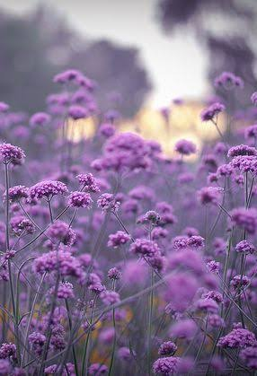

Rose
رمز الحب والجمال الساحر
Lily
عطر الطبيعة الفواح والهادئ
Tulip
ألوان زاهية ومبهجة للعين
Jasmin
زهرة رقيقة وعطرة ومميزة
استمتعي بجمال الطبيعة وعالم الورود الساحر

رمز الحب والجمال الساحر
عطر الطبيعة الفواح والهادئ
ألوان زاهية ومبهجة للعين
زهرة رقيقة وعطرة ومميزة